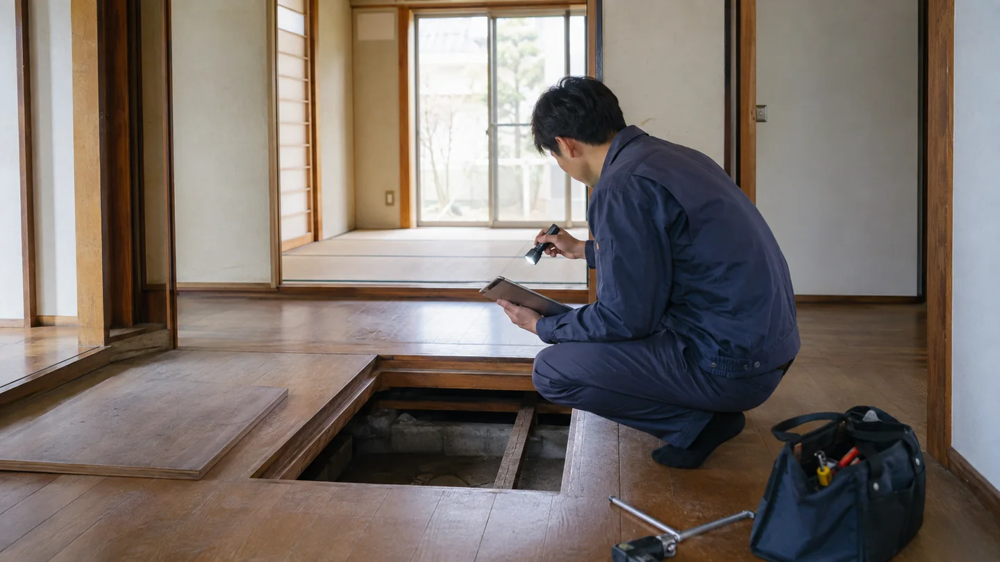
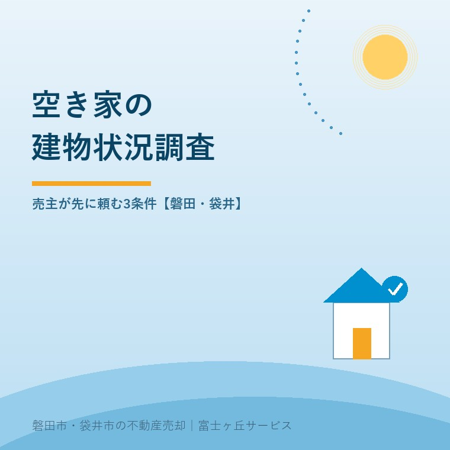

2026年9月8日｜カテゴリ：空き家／建物状況調査／売却実務


この記事の要点
Q. 親が施設へ入り空き家になった実家は、売主が建物状況調査を先に頼むべきですか。
A. 全件ではありません。①家の履歴を十分に聞けない、②結果を価格・告知・修繕判断へ反映できる、③調査できる状態と日程を確保できる。この3条件がそろうなら売出し前が有効です。調査は不具合ゼロの保証ではなく、見えた範囲の状態を共通資料にする手段です。
磐田市・袋井市・森町では、家を残して売るか、土地として売るかを先に比べ、地域密着の不動産会社と調査実施者へ役割を分けて相談する方法があります。
親御さんの施設入居で実家が空くと、家の状態を誰が説明するのかが難しくなります。売主であるご家族が住んでいなければ、雨漏りの時期や修繕の範囲を答えられないこともあります。
そこで候補になるのが、売出し前の建物状況調査です。ただし、調査を頼めば高く売れる、引渡し後の責任が消える、という制度ではありません。結果を受け取った後の使い方まで決めて初めて費用が生きます。
国土交通省の実態アンケート案内、建物状況調査Q&A、消費者向け手引き、現行の調査方法基準を2026年9月8日に確認しました。以下では公表事実と、宅地建物取引士としての私の判断を分けます。
宅地建物取引業法上の建物状況調査は、講習を修了した建築士が国の調査方法基準に従い、既存住宅の劣化事象等を調べる制度です。
確認する中心は、基礎、壁、柱、床、屋根などの構造耐力上主要な部分と、屋根、外壁、開口部などの雨水の浸入を防止する部分です。目視、計測、非破壊の検査を用います。
| 基本調査で確認すること | 基本調査だけでは言えないこと |
|---|---|
| 確認できる部位に劣化事象等があるか | 家に全ての不具合がないこと |
| 構造関係と雨水浸入防止関係の状態 | 給排水設備など対象外部分の健全性 |
| 家具で隠れていない範囲や点検口から見える範囲 | 壁の内部、地中、点検口のない部分の状態 |
意外なのは、異常が見つからないことと、調査できなかったことが別扱いになる点です。重い家具で隠れた部分や点検口がない部分は、「劣化なし」ではなく「調査できなかった」と報告されます。
国土交通省Q&Aは、所要時間を住宅の規模などにより1～3時間程度としています。費用は国の定額ではありません。同Q&Aの目安は、標準的な内容で6万円程度からです。
調査結果そのものに有効期限はありません。ただし、木造戸建てで重要事項説明の対象になる調査は、実施後1年以内です。売却予定が固まる何年も前ではなく、売出し準備と合わせて時期を決めます。
国土交通省が2026年1月に協力を案内したのは、個々の戸建てを国が検査する事業ではなく、令和7年度「戸建既存住宅の調査等に関する実態アンケート調査」です。
案内の目的は、関連制度の普及・活用に向けた基礎資料を得ることです。国は、調査方法基準の合理化、調査技術者の育成、既存住宅に関する瑕疵保険の周知を取り組みとして挙げています。
一方、案内ページには対象戸数、回答期間、回収数、調査の利用率、結果は載っていません。「2026年1月に国が戸建てを調査した」とは読めません。記事で使える新しい事実は、同月に実態アンケートへの協力を案内したことまでです。
制度を広げる動きは良いことです。ただ、売主が知りたいのは普及の掛け声より、自分の家で何が見え、結果を誰がどう説明するかです。
空き家の売主が建物状況調査を先に頼む条件は、履歴不足、結果を使える売却計画、調査可能な状態と日程の3つです。
これは法令が定める申込要件ではありません。大石浩之（磐田市／不動産業）が、売主側の費用と段取りから設けている判断基準です。
| 条件 | 売主が確認すること | 先に頼む意味 |
|---|---|---|
| 1 家の履歴を十分に聞けない | 雨漏り、傾き、修繕、シロアリ、浸水の記憶や資料がどこまで残るか | 現在確認できる状態を、家族の記憶とは別の資料にできる |
| 2 結果を価格と告知へ反映できる | 補修する、現況のまま価格へ織り込む、建物を残すかを再検討できるか | 悪い結果も含め、売出価格と説明条件を契約前に整えられる |
| 3 調査できる状態と日程がある | 鍵、点検口、家具、荷物、立入り、報告書受領から売出しまでの余裕 | 未調査部分を減らし、木造戸建ての1年という説明期間内で使いやすい |
三条件がそろっても、売却価格が上がるとは断定できません。価値は値上げの保証ではなく、「分からない」を減らして交渉の前提をそろえることです。
調査に耐震性の確認や修繕履歴などを組み合わせる場合は、安心R住宅で見る3条件も別に確認してください。建物状況調査だけで同制度の標章や瑕疵保険が自動的に付くわけではありません。
解体が確定した家、調査部位へ近づけない家、結果を売却条件へ反映する時間がない家では、建物状況調査より先に整える段取りがあります。
国土交通省Q&Aでは、除却が確定し、将来も居住用に使われる見込みがない空き家は対象となる住宅に当たらないと整理されています。土地として売る方針が固いなら、建物を残す案との査定比較を先にします。
家財が床下点検口や壁を塞いでいるなら、片付け前の調査は未調査部分を増やします。家族が残す物を分け、調査に必要な動線だけ確保してから依頼するほうが報告書を使いやすくできます。
売買契約が迫り、結果を読み込む時間がない場合も急がせません。調査は売主が直接依頼できますが、結果の概要を媒介会社へ渡し、物件状況等報告書、重要事項説明、契約条件と照合する時間が要ります。
調査前の見積りでは、基本調査、屋根や床下への進入、設備や配管の追加調査、交通費、報告書の範囲を分けます。給排水設備は基本調査の対象外なので、「家を全部見てもらえる」という頼み方では不足します。
売主先行の建物状況調査の良い点は、売主、買主、媒介会社が同じ結果概要を見て、契約前に確認事項をそろえられることです。
住んでいないご家族が家の全履歴を背負わずに済みます。補修する部分、現況で引き渡す部分、詳しい追加調査が要る部分も分けやすくなります。
その上で注文があります。「調査済み」「異常なし」という短い広告文に丸めてはいけません。調査できなかった部位と対象外設備まで買主へ伝わらなければ、期待だけが先に膨らみます。
建物状況調査は安心を買う儀式ではありません。悪い結果も売価、告知、契約に使い切る覚悟がある売主にこそ、先に頼む意味があります。
私は、空き家と聞いただけで調査を勧めるべきか迷います。調査費用を払っても、解体前提なら資料を使いません。反対に、建物を残して売りたいのに履歴が分からないなら、何も調べない費用のほうが交渉時に大きくなることがあります。だから私は、調査の申込みより先に売り方を聞きます。
調査をしても売主の説明責任が消えるわけではありません。引渡し後の責任との関係は、契約不適合責任と告知の実務で分けて説明しています。
買主が住宅ローンの基準確認を希望する場合は、フラット35中古プラスの物件検査と売主の準備も参照し、建物状況調査との目的の違いと補修負担の合意を確認してください。
磐田市・袋井市・森町の空き家では、調査会社を探す前に、建物を残す査定と土地としての査定を同じ条件で並べます。
磐田市福田など海に近い家で外壁金物や屋根の傷みが気になる場合は、塩害による劣化と建物状況調査に、調査前に伝える項目をまとめています。
富士ヶ丘サービスでは、介護施設への入居時期と実家の売却時期を一つの締切にしません。磐田・袋井の道路、境界、名義、残置物と建物の扱いを整理し、必要なら調査実施者へつなぎます。
今日、調査を申し込む必要はありません。紙を一枚用意し、「建物を残したいか」「家の履歴を聞けるか」「点検口まで入れるか」に丸を付ける。三条件がそろったときに見積りを取れば、まだ売却を決めなくても判断材料は増えます。
国が料金を定めているわけではありません。国土交通省Q&Aは、標準的な調査内容で6万円程度からを目安としています。住宅の広さ、構造、調査箇所、追加調査、交通費で変わるため、基本料金、追加項目、報告書費用を分けた見積りを実施者へ確認してください。
依頼できます。媒介会社による実施者のあっせんを使う方法と、売主が既存住宅状況調査技術者へ直接依頼する方法があります。売主が直接頼んだ場合も、結果の概要を媒介会社へ渡し、買主への重要事項説明と告知書、契約条件へどう反映するかを整理してください。
なくなりません。建物状況調査は調査時点で確認できる範囲の劣化事象等を把握するもので、全ての不具合がないことを保証しません。調査結果、売主が知る修繕・不具合の履歴、物件状況等報告書、売買契約の責任範囲を別々に確認してください。

この記事を書いた人：大石浩之（宅地建物取引士）
磐田市で不動産業と介護事業を営み、施設入居後の実家や空き家について、建物の扱い、告知、査定、売却の段取りを整理します。調査結果を売主とご家族が使える形にし、建築・契約の個別判断は専門家へつなぎます。プロフィール
ふじがおか実家カルテ｜固定資産税通知書だけでも相談可
調査の前に、建物を残すか比べる。
名義、道路、境界、残置物、建物の履歴を一枚へ整理します。建物状況調査が要る場合は、売出価格と告知へ使う順番まで確認します。
本記事は2026年9月8日時点の公表資料に基づく一般的な説明です。調査範囲、費用、報告時期、瑕疵保険、告知、契約条件、建物を残すか解体するかは物件と依頼先で変わります。建築、税務、登記、相続、契約の個別判断は、建築士、税理士、司法書士、弁護士などの専門家に確認してください。
富士ヶ丘サービス株式会社／静岡県磐田市見付5789番地1／TEL:0538-31-3308／静岡県知事 (2) 第14083号／代表取締役・宅地建物取引士 大石 浩之